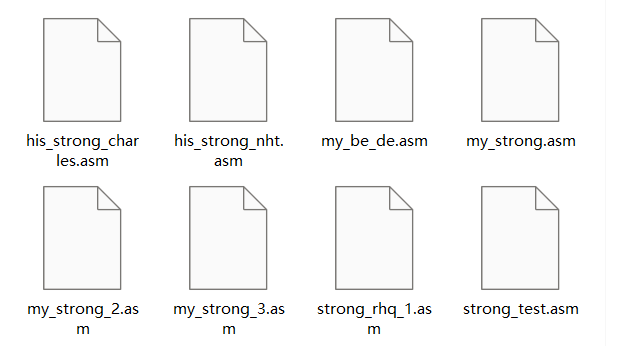

MIPS微系统设计文档¶
P7
 2023年《计算机组成》（实验）P7 MIPS微系统设计文档
2023年《计算机组成》（实验）P7 MIPS微系统设计文档
 author: 2237XXXX
author: 2237XXXX
 预祝计组实验完结撒花（完结失败，开启二周目……
预祝计组实验完结撒花（完结失败，开启二周目……
Content：
- Part 0. 任务清单
- Part 1. 设计思路A—内部的异常处理
- Part 2. 设计思路B—外部的外设交互
- Part 3. 测试
- Part 4. 思考题
- Part 5. 注意事项
Attachment：
- 附1： P7数据通路草图
- 附2： P7打表分析
- 附3： Verilog函数用法
Part 0. 任务清单¶
P7 与之前的 project 相比，涉及的内容较多，所以在实现的时候很容易手忙脚乱，这里列出完成 P7 需要的事宜：
A. 内部：异常处理¶
-
协处理器CP0： 设置 CPU 的异常处理功能，反馈 CPU 的异常信息，需要按规格自行实现。
-
内部异常检测与流水： CPU 需要具有可以检测内部指令执行错误的能力。
-
异常处理指令： 在异常处理程序中，会有一些特殊的指令需要实现。
- 注意mtc0，mfc0之间的阻塞问题
- eret要清空延迟槽
-
单周期CPU的封装： 让 CPU 从外部看上去是一个单周期 CPU。
- 优先级的问题（BD、F_PC、宏观PC的空泡问题，参考 ROIFE的博客）
我们会遇到一个问题：在阻塞时我们会往流水线中插入 nop，这个 nop 的
pc和bd信号都是0。此时宏观 PC 会显示错误的值。并且如果此时发生了中断，就会导致 EPC 存入错误的值。 -
异常处理程序： 利用 MARS 编写简单的异常处理程序用于测试。
B. 外部：外设交互¶
-
计时器： 课程组提供实现代码，只需要结合代码和文档理解应用即可。
-
系统桥： 为 CPU 提供统一的访问外设的接口，需要按规格自行实现。
- 与DM、Timer1、Timer2、InterruptGenerator实现交互
-
外部中断响应： CPU 需要具有初步响应外部中断信号的能力。

Part 1. 设计思路A—内部的异常处理¶
高小鹏：“设计 与 实现 必须分离，否则实现细节会严重干扰设计过程。”
刘旭东：原理 和 工艺 （即工程化方法）是两码事。如果不懂原理，只follow工程化方法，那bug出现将无从排查。
增加指令¶
增加的4条指令：
对应的RTL描述：
| 指令 | RTL描述 |
|---|---|
mfc0 |
\rm R[rt] \leftarrow CP0[rd] |
mtc0 |
\rm CP0[rd]\leftarrow R[rt] |
eret |
\rm PC\leftarrow CP0[epc] |
syscall |
\rm syscall |
主控制信号与冒险控制信号：

CP0寄存器的冒险¶
其中，CP0寄存器处于流水线中也 可能存在冒险。例如：当D级为 eret 时，需要使用CP0[epc]；但是如果 mtc0 在E级、M级，尚未完成CP0的写入，于是产生了冒险！
解决方法：直接强制暂停
wire Stall_CP0_unready = E_CP0_Write | M_CP0_Write;
......
assign Stall = ... | ... | Stall_CP0_unready;
这里写成
会不会更好呢？
或者形成
wire Stall_CP0_unready = (D_eret) & ( ((E_CP0_Write) & (E_A3 == 5'd14)) | ((M_CP0_Write) & (M_A3 == 5'd14)) );会不会还更好呢？
（upd） 上面这个错了（喜提P7第一次课上测试唯一bug），判定地址应该是 Rd 而不是 A3 ！
eret指令的清空延迟槽¶
清空延迟槽的通用方法：
-
插入空泡（我在P5课上就是这么实现的）
-
直接清空： 将PC寄存器的出口处F_PC修正为NPC，入口处NPC修正为NPC+4。形象地讲，就好像把PC处的延迟槽指令（的地址）给强行 "短路" 了，如下图所示。

- 其他方法……
由于“插入空泡”的方法可能带来宏观PC的问题（本来Stall就会产生空泡，它的解决本来就很烦了，为了避免麻烦，就不要增加空泡的产生来源了），故采用“强制进入”的方式
// 清空延迟槽?
wire skip_slot = D_eret; //哪些指令清空延迟槽?
wire [31:0] Fixed_NPC = (skip_slot) ? D_NPC_plus_4 : D_NPC;
wire [31:0] Fixed_F_PC = (skip_slot) ? D_NPC : F_PC;
assign i_inst_addr = Fixed_F_PC; // ~~~~~~> go out of cpu
注意：既然清空了延迟槽，就不应该给下一条指令BD标记，所以 eret 指令在D级时 不应 为F级的指令标记BD！
内部异常检测与流水¶
F级指令异常检测¶
需要检测的指令：
为什么要明确需要检测的指令？
比如，若不需要使用ALU进行加减法运算的指令，使得ALU加减法产生异常，那么我们**不**应该记录这个异常
异常检测：
上面这个错了，
F_PC应该是Fixed_F_PC
wire F_Exc_AdEL = (!D_eret) & ((|Fixed_F_PC[1:0]) | (Fixed_F_PC < 32'h0000_3000) | (Fixed_F_PC > 32'h0000_6ffc));
检测到了之后的处理：视作nop指令
D级指令异常检测¶
需要检测的指令：
异常检测：
// Ctrl 模块
assign D_syscall = _syscall_;
assign D_Exc_RI = (!(_mfc0_ | _mtc0_ | _eret_ | _syscall_ |
_nop_ |
_add_ | _sub_ | _or_ | _and_ | _slt_ | _sltu_ |
_mult_ | _multu_ | _div_ | _divu_ | _mfhi_ | _mflo_ | _mthi_ | _mtlo_ |
_jr_ |
_ori_ | _lui_ | _addi_ | _andi_ |
_beq_ | _bne_ |
_lw_ | _lh_ | _lb_ | _sw_ | _sh_ | _sb_ |
_jal_ ));
检测到了之后的处理：视作nop指令
E级指令异常检测¶
需要检测的指令：
// E_Ctrl
assign E_need_check_Ov_cal = _add_ | _addi_ | _sub_;
assign E_need_check_Ov_visit = _lw_ | _lh_ | _lb_ |
_sw_ | _sh_ | _sb_;
异常检测：
reg [32:0] temp1,temp2;
assign E_Exc_Ov = (E_need_check_Ov_cal) & ((ALUOp == 7'd0) && (temp1[32] != temp1[31])) | ((ALUOp == 7'd1) & (temp2[32] != temp2[31]));
assign E_DM_Ov = (E_need_check_Ov_visit) & (ALUOp == 7'd0) && (temp1[32] != temp1[31]);
always @(*) begin
temp1 = {A[31], A} + {B[31], B};
temp2 = {A[31], A} - {B[31], B};
......
检测到了之后的处理：不管
M级指令异常检测¶
需要检测的指令：
异常检测：
// BE模块
wire word_align = (Store) & (DMSel == 7'd0) & (|MemAddr[1:0]);
wire half_align = (Store) & (DMSel == 7'd1) & (MemAddr[0]);
wire half_to_timer = (Store) & (DMSel == 7'd1) & ( (32'h7f00 <= MemAddr && MemAddr <= 32'h7f0b)
| (32'h7f10 <= MemAddr && MemAddr <= 32'h7f1b) );
wire byte_to_timer = (Store) & (DMSel == 7'd2) & ( (32'h7f00 <= MemAddr && MemAddr <= 32'h7f0b)
| (32'h7f10 <= MemAddr && MemAddr <= 32'h7f1b) );
wire addr_overflow = (Store) & (M_DM_Ov);
wire to_count = (Store) & ( (32'h7f08 <= MemAddr && MemAddr <= 32'h7f0b)
| (32'h7f18 <= MemAddr && MemAddr <= 32'h7f1b) );
wire addr_invalid = (Store) & (!( (32'h0000 <= MemAddr && MemAddr <= 32'h2fff)
| (32'h7f00 <= MemAddr && MemAddr <= 32'h7f0b)
| (32'h7f10 <= MemAddr && MemAddr <= 32'h7f1b)
| (32'h7f20 <= MemAddr && MemAddr <= 32'h7f23) ));
assign M_Exc_AdES = word_align | half_align | half_to_timer | byte_to_timer |
addr_overflow | to_count | addr_invalid;
// DE模块
wire word_align = (Load) & (DMSel == 7'd0) & (|MemAddr[1:0]);
wire half_align = (Load) & (DMSel == 7'd1) & (MemAddr[0]);
wire timer_to_half = (Load) & (DMSel == 7'd1) & ( (32'h7f00 <= MemAddr && MemAddr <= 32'h7f0b)
| (32'h7f10 <= MemAddr && MemAddr <= 32'h7f1b) );
wire timer_to_byte = (Load) & (DMSel == 7'd2) & ( (32'h7f00 <= MemAddr && MemAddr <= 32'h7f0b)
| (32'h7f10 <= MemAddr && MemAddr <= 32'h7f1b) );
wire addr_overflow = (Load) & (M_DM_Ov);
wire addr_invalid = (Load) & (!( (32'h0000 <= MemAddr && MemAddr <= 32'h2fff)
| (32'h7f00 <= MemAddr && MemAddr <= 32'h7f0b)
| (32'h7f10 <= MemAddr && MemAddr <= 32'h7f1b)
| (32'h7f20 <= MemAddr && MemAddr <= 32'h7f23) ));
assign M_Exc_AdEL = word_align | half_align | timer_to_half | timer_to_byte |
addr_overflow | addr_invalid;
检测到了之后的处理：
-
Store类：
注意：这里异常指令已经进入了M级，Req那么可能来不及阻止Store类指令篡改外设
所以，要想办法解决。可以是“冻结”BE模块的使能信号
-
Load类：
向W级流水寄存器 也 发出Req信号（和CP0级之前的流水级一样地，即和D级、E级、M级流水寄存器一样处理），防止load出来的数据篡改通用寄存器
单周期CPU的封装¶
rst、Req和Stall的优先级¶
优先级问题的具体分析可参照教程、ROIFE的博客、思考题5来进行理解。
结论就是：
-
Stall产生空泡时，要让PC和BD继续流水，防止中断。
否则：见教程
-
Req清空流水寄存器时，要让PC置为
32'h0000_4180（而非32'h0000_3000），防止中断。否则：从外面看，暴露出去的宏观PC会产生**突变**（比如，
32'h0000_34fc\rightarrow32'h0000_3000\rightarrow32'h0000_4180）
D级：
always @(posedge clk) begin
if (rst | Req) begin
D_PC <= (rst) ? 32'h0000_3000 :
(Req) ? 32'h0000_4180 : 32'h0000_3000;
D_Intsr <= 0;
D_BD <= 0;
D_ExcCode <= 0;
end
else if (!Stall) begin
......
......
E级：
always @(posedge clk) begin
if (rst | Stall | Req) begin
E_Instr <= 0;
E_BD <= (rst) ? 0 :
(Req) ? 0 :
(Stall) ? D_BD : 0;
......
E_PC <= (rst) ? 32'h0000_3000 :
(Req) ? 32'h0000_4180 :
(Stall) ? D_PC : 32'h0000_3000;
......
......
M级：
always @(posedge clk) begin
if (rst | Req) begin
M_Instr <= 0;
M_PC <= (rst) ? 32'h0000_3000 :
(Req) ? 32'h0000_4180 : 32'h0000_3000;
......
end
......
协处理器CP0¶
按照教程的规格设计即可。
万分小心，在CP0不断被Verilog的特性被刺。
注意几点：
-
谁提供
en？mtc0，准确来说是M级的mtc0 -
谁提供
EXLClr？eret，准确来说是M级的eret
异常处理程序¶
略。
课下测试时，就是简单的取出CP0[12] \rightarrow 取出CP0[14] \rightarrow EPC+4 \rightarrow 写回CP0[14] \rightarrow 跳回
Part 2. 设计思路B—外部的外设交互¶
系统桥Bridge¶
据 L15-支持IO（高小鹏），Bridge应具有的功能有：
-
输出地址
-
地址匹配：根据地址为每个设备产生一个译码信号（hit，即是否命中）
地址图 条目 地址或地址范围 备注 数据存储器 \rm0x0000\_0000∼0x0000\_2FFF 指令存储器 $ \rm0x0000_3000∼0x0000_6FFF$ PC 初始值 \rm 0x0000\_3000 异常处理程序入口地址 \rm 0x0000\_4180 计时器 0 寄存器地址 \rm 0x0000\_7F00∼0x0000\_7F0B 计时器 0 的 3 个寄存器 计时器 1 寄存器地址 \rm 0x0000\_7F10∼0x0000\_7F1B 计时器 1 的 3 个寄存器 中断发生器响应地址 \rm 0x0000\_7F20∼0x0000\_7F23 -
读数据：DEV的所有数据输出 汇聚 至CPU的数据输入（MUX控制）
- 写数据：CPU的数据输出 派发 至DEV的所有数据输入（直通输出）
综上，Bridge与外设的交互逻辑可用下图表示。

计时器Timer¶
端口说明
| 序号 | 信号名 | 方向 | 描述 |
|---|---|---|---|
| 1 | clk | I | 时钟信号 |
| 2 | reset | I | 同步复位信号 |
| 3 | Addr[31:2] | I | 地址数据 |
| 4 | WE | I | 写使能信号 |
| 5 | Din[31:0] | I | 读入数据 |
| 6 | Dout[31:0] | O | 读出数据 |
| 7 | IRQ | O | 计时器中断信号 |
功能定义
| 序号 | 功能 | 描述 |
|---|---|---|
| 1 | 定时产生中断信号 | 通过计数模式定期产生中断信号 |
| 2 | 模式0 | 计数为0时，若不复位，持续产生IRQ信号 |
| 3 | 模式1 | 计数为0时，产生一周期IRQ信号后重新计数 |
中断发生器InterruptGenerator¶
-
无需自己实现
-
发出中断：
微系统可以通过外部端口接受外部中断信号（在计时器部分已经实现了）。（外设的实现-中断发生器）
中断信号依据宏观 PC 产生，依据相应的待写入地址和字节使能信号关闭，具体实现参考下发的 tb。（P7提交要求-硬件约束）
-
响应中断：
微系统可以通过访问地址
0x7F20的store类指令，改变对应的微系统输出信号（m_int_addr，m_int_byteen），即系统桥实现正确。（外设的实现-系统桥）测试程序只会通过指令
sb $0, 0x7f20($0)访问中断发生器（响应中断），且只会在中断处理程序中访问。（P7提交要求-官方测试说明）我们的硬件只需要**忠诚地翻译指令**。
是否访问
0x7f20是软件程序决定的事情，而我们的硬件只用支持软件去访问0x7f20即可。……（P7答疑帖）
-
读写：
由于其内部并没有真正的存储单元，我们规定读出的数据始终保持 0，且写入时除了响应中断外不会产生其他影响。（P7提交要求-硬件约束）
Part 3. 测试¶
（Before 2023.12.04） P7不能和MARS对拍，同学间又难以协同，压力测试难以进行……
（After 2023.12.04） 挂了
P7_strong_exception之后，测试必须要进行了……
测试工具：
-
数据生成程序： 沿用P6课下测试时，由我完成的简易Python程序（稍许修改：增加syscall指令；允许异常发生）。用户态指令集如下：
-
coKiller： 由
姜涵章 21375212等同学完成的自动评测机
测试约束：
- 魔改版Mars可以实现异常的测试，但无法实现中断的测试。但由于我第一次P7课上对 function、interrupt 和 hazard 的测试都通过了，所以可以把测试范围聚焦在 异常（exception） 上
- 因此，在“异常”这个层面，我可以实现与MARS的对拍，不用再考虑当时课下“难以协同”的问题
- 其中，出于合法性的考虑，不能通过与MARS对拍来测试
RI
测试数据：

| 文件 | 描述 |
|---|---|
strong_test.asm |
从 ZGY （ ZGY 又从Mr.Who）白嫖来的数据 |
his_strong_charles.asm |
从 Charles2530 的GitHub仓库白嫖来的数据 我对其中的 lhu 和 j 指令作了修改，对其中div除0的地方作了修改 |
my_strong.asmmy_strong_2.asmmy_strong_3.asm |
由我编写的Python程序生成的大规模数据 |
my_be_de.asm |
由我编写的针对存储类指令AdEL/AdES异常测试的数据 |
strong_rhq_1.asm |
利用我在Github上发现的 RHQ 助教的数据生成器生成的数据 我对其中的 addu,subu,addiu指令作了修改 |
his_strong_nht.asm |
从讨论区 NHT 白嫖来的数据 |
Part 4. 思考题¶
Q1： 请查阅相关资料，说明鼠标和键盘的输入信号是如何被 CPU 知晓的？
A1： 鼠标和键盘产生中断信号，进入中断处理程序，在中断处理程序中，鼠标和键盘输入信号。
Q2： 请思考为什么我们的 CPU 处理中断异常必须是已经指定好的地址？如果你的 CPU 支持用户自定义入口地址，即处理中断异常的程序由用户提供，其还能提供我们所希望的功能吗？如果可以，请说明这样可能会出现什么问题？否则举例说明。（假设用户提供的中断处理程序合法）
A2： 若自定义入口地址，则很多软件将会不兼容，在程序员视角设计软件的时候，中断处理的入口地址是不重要的，也就是说这是软件和硬件之间的协议。
Q3： 为何与外设通信需要 Bridge？
A3： CPU不能为每一个设备都提供一套地址/数据，否则会导致CPU设计变得复杂。
Q4： 请阅读官方提供的定时器源代码，阐述两种中断模式的异同，并分别针对每一种模式绘制状态移图。
A4：
- 相同：在允许计数的情况下，都是从初值寄存器中获取初数值到计数值寄存器中开始计数；两种模式都受控制寄存器的控制
- 不同：模式0在计数结束后，会一直提供中断信号，直到IM或者EN被修改使其禁止中断或停止计数，模式1在计数结束后，只会提供一周期的中断信号，然后自动再次赋初值开始计数，知道IM或者EN被修改行为才会被改变。

Q5： 倘若中断信号流入的时候，在检测宏观 PC 的一级如果是一条空泡（你的 CPU 该级所有信息均为空）指令，此时会发生什么问题？在此例基础上请思考：在 P7 中，清空流水线产生的空泡指令应该保留原指令的哪些信息？
A5：
-
Stall产生空泡时，要让PC和BD继续流水，防止中断。
否则：见教程
-
Req清空流水寄存器时，要让PC置为
32'h0000_4180（而非32'h0000_3000），防止中断。否则：从外面看，暴露出去的宏观PC会产生 突变（比如，
32'h0000_34fc\rightarrow32'h0000_3000\rightarrow32'h0000_4180）
Q6： 为什么 jalr 指令为什么不能写成 jalr $31, $31？
A6：
- 这种操作具有二义性，不知道先跳转还是先链接
- 指令集要求。寄存器说明 rs 和 rd 不得相等，因为此类指令在重新执行时不具有相同的效果。执行此类指令的结果是不可预测的。此限制允许异常处理程序在分支延迟槽中发生异常时通过重新执行分支来恢复执行。
Part 5. 注意事项¶
（P7 二周目 upd）
- 课上添加新指令的步骤
- 译码（主Ctrl，E_Ctrl，M_Ctrl都要译），并且识别 \rm RI 异常时要排除新指令
- 主控制信号
- 通用寄存器的冒险
- CP0寄存器的冒险
（P7 upd）
-
Fix了的信号，传递/使用时要用fix了之后的信号
F_PC\rightarrowFixed_F_PCD_NPC\rightarrowFixed_NPCD_Instr\rightarrowFixed_D_InstrD_Instr\rightarrowFixed_D_InstrMemWD\rightarrowFixedMemWDMemRD\rightarrowFixedMemRD
这里和P3的教训有异曲同工之妙。都是在通路中 插入 一段修改，往往只注意往前看， 接上 上游的出口，而忽略往后看， 旧的此处可能 接着 多个出口
本来是插入修改来修改bug的，但反而新增意想不到的bug（这就是用代码去描述电路的烦人之处了……

P3课上T3的教训
- 当顶层模块新增MUX时，其上下游的信号含义可能发生变化（使用Tunnel尤其不容易看出来），因此要注意其上下游数据通路的改变
-
wire/reg一个新变量时，要声明位宽！！！
- 这P7信号一多起来，就没想到自己在位宽方面出问题……
- 因为P7容易手忙脚乱，总是像写编程语言一样直接
wire xxx = xxxxx出一个新变量，从而忽略了位宽
（P6 upd） P6课下总结的：
-
注意ISE工程下的文件选择
- 不定态它又来了又来了又来了……
-
注意Signedness！！！注意Signedness！！！注意Signedness！！！
P6 的计算一般是和乘除部件有关，但是其实也不难，这里建议课下做一下
madd、maddu、msub、msubu。一个坑点在于
madd（或者msub）里面。如果你的写法是好像就会出锅，这个具体的原因在 P1 里面讲过了，和 signedness 有关。另外，如果你写的是
也不对，具体也是 P1 里面有讲。正确的写法是：
{temp_hi, temp_lo} <= {hi, lo} + $signed($signed(64'd0) + $signed(rs) * $signed(rt)); // 或者 {temp_hi, temp_lo} <= {hi, lo} + $signed({{32{rs[31]}}, rs[31:0]} * $signed({{32{rt[31]}}, rt[31:0]})); // 手动进行符号位扩展总之一句话：小心
$signed()。 ——ROIFE BLOG（博客链接）
（P5 upd） P5课下总结的：
- 使用function减少Ctrl C+V
- 平时function用的少，但是很好用。P4课上gray那题忘了function怎么写真是血亏
- 附在设计文档后面~
（P4 upd） P4课下总结的：
在debug时，发现一些Veriolog的特性造成的让人抓狂的问题：
-
在对一个多位宽信号赋值时，如果只对某些bit赋值，可能产生意想不到的后果
-
我的控制基本信号基本都是8位，在对低0-1位赋值时，其他位竟然呈现高阻态！
-
错误写法：
这样写的话RegDst[7:2]都是z（高阻态）
-
正确写法：
-
-
-
注意Verilog运算符的优先级！
-
比如P1课上的T1，就因为没注意到
&和+的优先级，而找bug找了半小时！ -
再比如这次的P4：
错误写法：
NPC = (is_eq == 1) ? PC + 4 + extend_Imm << 2 : PC + 4正确写法：
NPC = (is_eq == 1) ? PC + 4 + (extend_Imm << 2) : PC + 4
-
-
P3课上T3的教训
- 当顶层模块新增MUX时，其上下游的信号含义可能发生变化（使用Tunnel尤其不容易看出来），因此要注意其上下游数据通路的改变
再见了所有的Computer Organization
The journey starting from 2023 Summer comes to an end on 2023.12.11